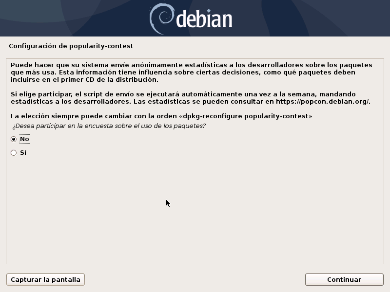
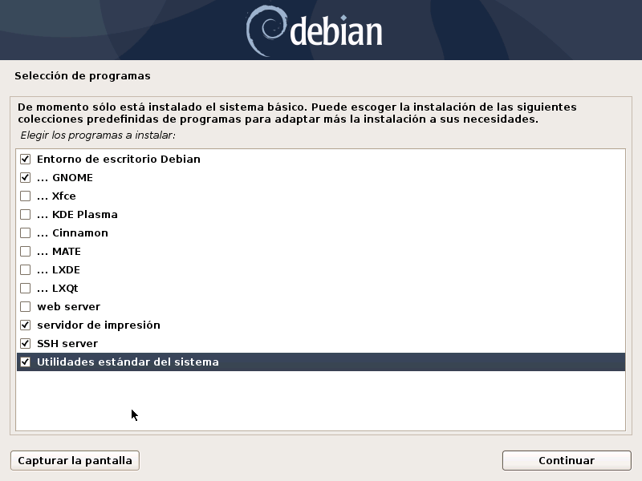
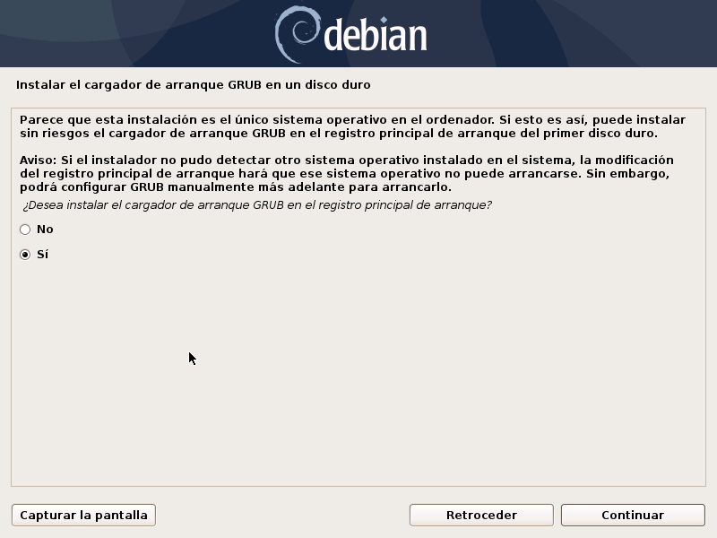
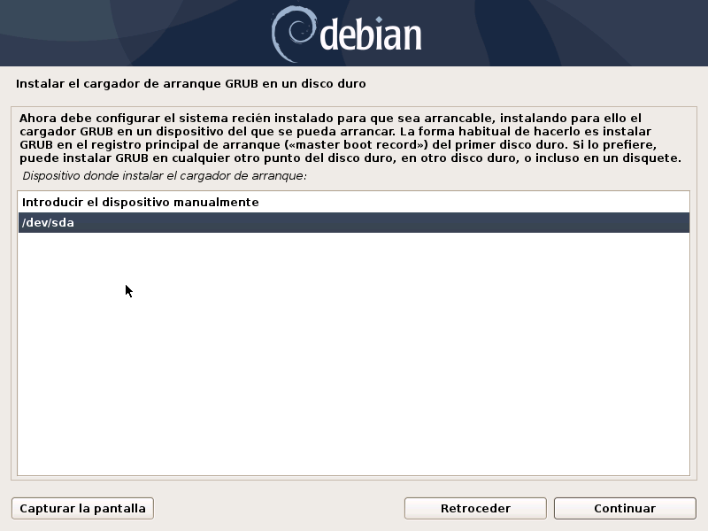
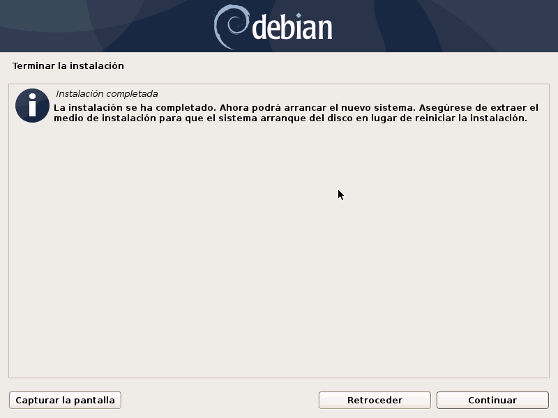
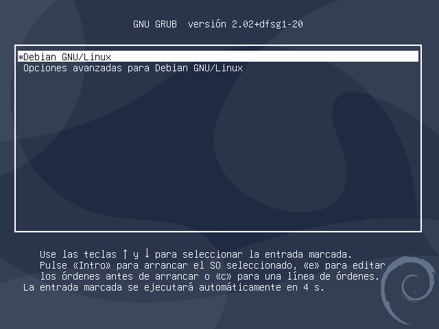
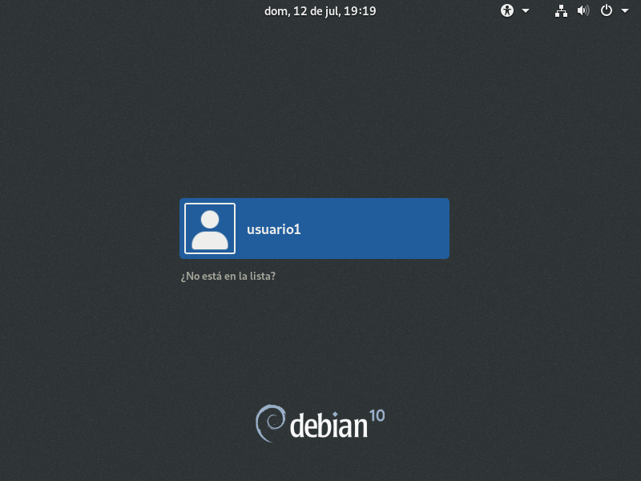
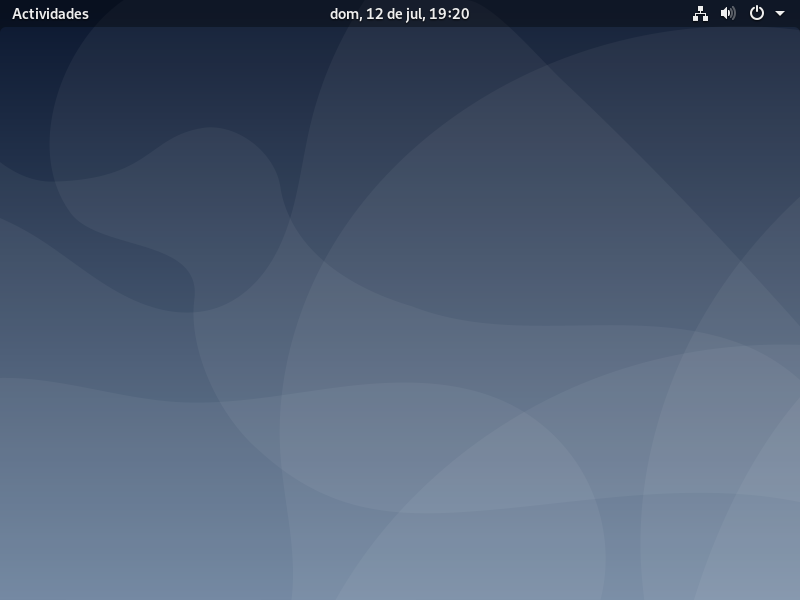

Instalacion de Debian 10
1. Descargamos la Imagen de Debian desde la web oficial.
2. Montamos la imagen e iniciamos el proceso de instalacion. En este caso seleccionamos la instalacion grafica o "Graphical Install".

3. En esta pantalla seleccionamos el lenguaje de instalacion y el pais donde estamos ubicados. Esto comenzara la instalacion


4. Configuramos el teclado que estamos utilizando
Esto es para que el paquete de instalacion sepa que teclas estamos utilizando segun nuestra configuracion regional

5. Luego introducimos un nombre de hostname, o nombre de la maquina
Este puede ser cualquier nombre, en este caso lo dejaremos como Debian.

6. Luego introducimos el nombre de dominio de red, esto puede ser inventado si estamos en una red domestica, sin embargo si estamos en una red corporativa donde si existe un nombre de dominio debemos asegurarnos de que este equipo tenga el mismo nombre de dominio que todos los equipos en la red.

7. Configuramos la contraseña del super usuario.
Esta es la contraseña para el usuario "root". Esta es la cuenta de administracion de sistema. Procurar seguir las sugerencias que nos da el instalador para hacer una contraseña segura, pues si esta contraseña es descifrada por algun intruso esta le dara control absoluto sobre nuestro sistema.

8. Ahora configuramos una cuenta de usuario para utilizar en vez de la cuenta de superusuario, definimos un nombre de usuario y contraseña.


9. Configuramos la particion del disco del sistema.


10. Si tenemos un disco con paquetes adicionales para instalar, podemos insertarlo y el instalador instalara los paquetes detectados, en este caso, no tenemos disco adicional, asi que continuamos con la instalacion normalmente.

11. Ahora configuraremos el gestor de paquetes, debemos seleccionar de donde nuestro sistema operativo instalara sus paquetes, podemos seleccionar un pais cercano, pero esta podria no ser la mejor opcion debido a la disponibilidad de los servidores.


12. Configuracion del proxy.
Si estamos en una red corporativa, generalmente nuestro trafico de red va a pasar por un servidor proxy, si este no es el caso, se debe dejar en blanco este espacio y continuar con la instalacion.

13. Decidimos si queremos que nuestro sistema envie estadisticas anonimas a los desarrolladores. En este caso seleccionaremos la opcion No.
14. Debian nos permite instalar varios paquetes adicionales.
En este caso instalamos la interfaz grafica GNOME y OpenSSH para poder acceder al sistema a traves de SSH.
15. GRUB
Como no hay otros sistemas operativos instalados, instalamos el cargador de arranque GRUB.
 16. Finalizacion de la instalacion e inicio del sistema.
Al finalizar la instalacion nuestro sistema se va a reiniciar, selecionamos el sistema operativo de arranque, luego seleccionamos nuestro usuario, introducimos nuestra contraseña y el sistema estara instalado.
   